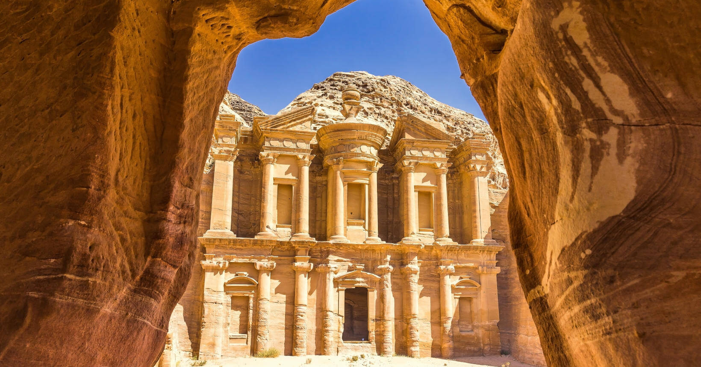

Explore as fascinantes histórias de civilizações antigas, culturas e eventos históricos que moldaram o mundo como o conhecemos hoje. Descubra os mistérios do Egito, a filosofia da Grécia, as conquistas do Iraque e as maravilhas da Turquia. Mergulhe em um universo de conhecimento e aventura enquanto exploramos juntos o passado fascinante da humanidade.
As Sete Maravilhas do Mundo Antigo são um conjunto de construções extraordinárias erguidas por grandes civilizações da Antiguidade, principalmente na região do Mediterrâneo e do Oriente Médio. Elas foram listadas por estudiosos e viajantes da Grécia Antiga, que buscavam destacar as obras mais impressionantes do mundo conhecido na época, tanto pela grandiosidade quanto pela beleza e complexidade arquitetônica. Entre essas maravilhas estão a Grande Pirâmide de Gizé, os Jardins Suspensos da Babilônia, o Templo de Ártemis em Éfeso, a Estátua de Zeus em Olímpia, o Mausoléu de Halicarnasso, o Colosso de Rodes e o Farol de Alexandria. Cada uma delas representava o poder, a cultura e o avanço técnico de seu povo, sendo muitas vezes ligadas à religião ou à homenagem de grandes líderes. Com o passar dos séculos, guerras, desastres naturais e a ação do tempo levaram à destruição de quase todas essas obras. Atualmente, apenas a Grande Pirâmide de Gizé ainda permanece de pé. Mesmo assim, as Sete Maravilhas do Mundo Antigo continuam sendo um importante símbolo da criatividade humana e do desejo de construir obras que desafiem o tempo e deixem um legado para as futuras gerações.
